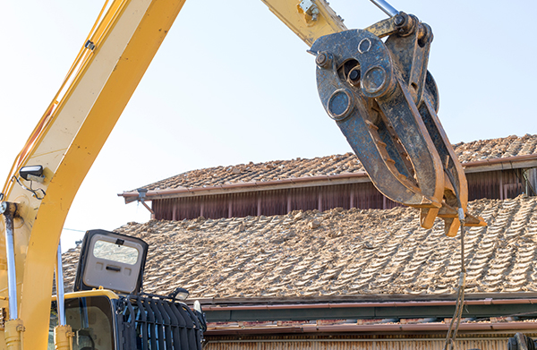
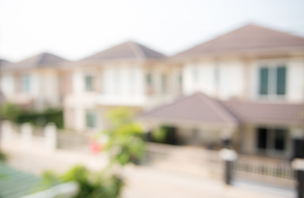

- ホーム
- 不動産の売却・空き家の相談
Private相続した不動産や空き家のご相談
空き家問題は、今や国を挙げて対策している大きな問題です。空き家を放置することは、空き家の持ち主にその責任が問われるだけでなく地域にとってもトラブルの原因にもなる場合もあるのです。不動産を放置しておくことは百害あって一利なし。気仙沼市で空き家を保有しているが、どうしたらいいか分からないとお悩みの方は、十人十色ライフサービスまでご相談ください。
空き家放置のリスクとデメリット
固定資産税が上がり資産価値が下がる
まずは固定資産の上昇リスク。「特定空き家等」に該当してしまうと、固定資産税が2～3倍に跳ね上がってしまい、経済的リスクを負うことになります。また、空き家が増えていること、過疎化している地域が増えていることから、空き家の資産価値はどんどん下がっていきます。逆に、早く売れば資産価値を落とすことなく高く売れる可能性は充分にあります。
空き家は強制解体される場合も

もし、空き家が強制解体されることになった時には、その費用は所有者負担です。売っていれば多少なりともお金になっていたのに、余計な出費にもつながります。また、最悪の事態は、倒壊によって第三者に被害をかけてしまった時、その場合は責任も所有者が負うことになります。このように空き家を放置しておくと、価値が下がるだけでなく、出費の要因につながります。売るなり資産活用するなり、不動産会社に相談して決めましょう。
空き家管理サービス
空き家を放置しておく、家の劣化を早め、さまざまなトラブルの原因になります。そうならないために活用したいのが「空き家管理サービス」。遠くにある空き家を売却したくない、転勤や海外赴任で長期間家を空けなければならない時に、十人十色ライフサービスがお客様に代わり空き家を管理いたします。
実際にスタッフが家を訪問し、不具合がないかチェック、通気や換気を行い通水して排水管トラブルを未然に防ぎます。草刈りや立木の剪定や、害虫・害獣の駆除もするため、さまざまなトラブルの原因を取り除いてくれます。
相続について

空き家が生まれる大きな要因の一つが相続です。たとえば、遠くに住む子どもに両親が不動産を相続しても、管理することもできず家を放置してしまうことになります。子どものためと思って相続した不動産が、逆に子どもに迷惑をかけてしまうことになるのです。
その点、不動産を売却しておけば相続人が分割もしやすく、遺産相続のトラブルも起きづらくなります。現在、相続された不動産に困っている方はもちろんですが、将来のことを考えれば生前から不動産をどうするのか家族や親戚の間で相談しておきましょう。亡くなったら売却することも賢い選択の一つです。
相続相談もお任せください！
空き家は、必ずしも売却するだけが選択肢ではありません。中には、相続した不動産を売却するのに抵抗を感じる方も多くいらっしゃいます。十人十色ライフサービスではそういった方に空き家の活用方法についてのご提案をしております。
駐車場を貸したい、コインパーキングにしたい、アパートを建てたいなど不動産の活用はさまざまな使い道があります。十人十色ライフサービスはお客さまの要望を聞きながら、満足いく選択ができるよう全力でサポートさせていただきます。
気仙沼市の周辺で空き家にお悩みの方は、十人十色ライフサービスにお任せください。売却だけでなく、空き家管理など幅広い選択肢の中から、お客さまが納得の行く方法でサポートさせていただきます。